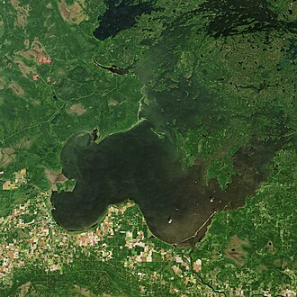

Where Was Treaty 3 Negotiated?
Treaty 3 was signed on October 3, 1873, at the Northwest Angle of Lake of the Woods, which is located in what is now the state of Minnesota in the United States. The Canadian government had been trying to reach an agreement with the Anishinaabe peoples for several years before the treaty was finally signed. Ojibwe leaders, including Chief Powasson, repeatedly rejected the Crown's early offers and negotiated for better conditions. Because of their determination, the Anishinaabe secured terms that were more favourable than those in the earlier Treaty 1 and Treaty 2. The Northwest Angle was chosen as the signing location because it was accessible to both Crown representatives and the many Anishinaabe communities spread across the Lake of the Woods and Rainy River regions.

Communities Involved in Treaty 3
The Grand Council Treaty #3 currently represents 28 First Nations, all of which are Anishinaabe (Ojibwe or Saulteaux) peoples. These communities are located across northwestern Ontario and a small part of southeastern Manitoba. Some of the First Nations included under the treaty are Rainy Lake First Nation, Lac La Croix First Nation, Naotkamegwanning First Nation (also known as Whitefish Bay), Wauzhushk Onigum Nation, Big Grassy River First Nation, Grassy Narrows First Nation (Asubpeeschoseewagong), and Shoal Lake 40 First Nation. All of these communities share an Anishinaabe heritage and language, and they are all governed under the framework of the Grand Council Treaty #3, which advocates for their rights and interests.
Historic Terms of the Treaty
Treaty 3 included a number of important promises from the Canadian Crown to the Ojibwe peoples. The Ojibwe agreed to share their territory, and in exchange the Crown agreed to the following conditions:
- The Ojibwe shared approximately 55,000 square miles of land with the Canadian Crown.
- Each family of five would receive one square mile (640 acres) of reserve land.
- Every person would receive an annual payment of $5, chiefs would receive $25, and headmen would receive $15.
- The Ojibwe kept the right to hunt and fish on unoccupied Crown lands.
- The government promised to build schools on reserves.
- Farming tools, cattle, and seeds were to be provided to support agriculture on reserves.
- Ammunition and twine would be provided each year.
One thing that makes Treaty 3 different from earlier numbered treaties is that there were many "outside promises" — things the government verbally agreed to but never wrote into the treaty document. These included promises about medicine chests, pest protection, and famine relief. Because they were not written down, these promises were later disputed, which became a major source of conflict between the Ojibwe and the Canadian government in the years that followed.
How Is Treaty 3 Being Implemented Today?
Today, the rights and responsibilities of Treaty 3 are managed through the Grand Council Treaty #3, which serves as the political and governing body for its 28 member First Nations. Land claims, resource rights, and self-governance are ongoing discussions that continue to shape the relationship between the member nations and the Canadian government. One important area of treaty implementation today is the development of urban reserves. Urban reserves allow First Nations to establish businesses and economic developments on treaty land near cities, which helps communities benefit financially while maintaining a connection to their traditional territories. For example, some Treaty 3 communities have developed gas stations, convenience stores, and other businesses that generate revenue for their members. The treaty relationship also plays a role in decisions about natural resource extraction, environmental protection, and land use across the region, as First Nations have rights to be consulted before development takes place on their traditional lands.